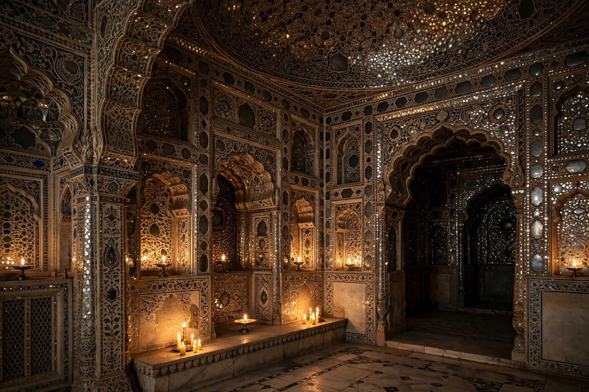

| Sheesh Mahal | |
|---|---|
 Mirror work inside the Sheesh Mahal, Amber Fort | |
| Location | Amber Fort, Jaipur, Rajasthan, India |
| Built | c. 1623 (Amber); 1631–32 (Lahore) |
| Style | Rajput / Mughal |
Sheesh Mahal ("Palace of Mirrors") is a name given to several celebrated palace chambers in South Asia whose walls and ceilings are inlaid with intricate mirror mosaic work. The two most famous examples are the Sheesh Mahal of Amber Fort near Jaipur, Rajasthan, and the Sheesh Mahal within the Lahore Fort in Pakistan.
The Sheesh Mahal at Amber, part of the Diwan-i-Khas complex of the palace built under Raja Man Singh I and his successors in the early 17th century, is famed for its ceilings and pillars encrusted with tiny convex mirrors and coloured glass set in plaster. A famous tradition holds that a single candle flame reflected in thousands of mirrors could light the whole chamber. The hall forms part of the Jai Mandir above the Ganesh Pol gateway.
The Sheesh Mahal of Lahore Fort, built under the Mughal emperor Shah Jahan in 1631–32 within the Shah Burj block, is considered one of the finest surviving examples of Mughal mirror work (ayina kari). Its walls combine mirror mosaic with pietra dura and carved marble screens. It forms part of the UNESCO World Heritage listing of the Lahore Fort complex.
Other mirror palaces include the Sheesh Mahal of Agra Fort, built by Shah Jahan, and mirror chambers in the palaces of Udaipur and Orchha. The craft of mirror inlay, using small pieces of reflective glass set in geometric and floral patterns, became a hallmark of Rajput and Mughal palace decoration from the 17th century onward.